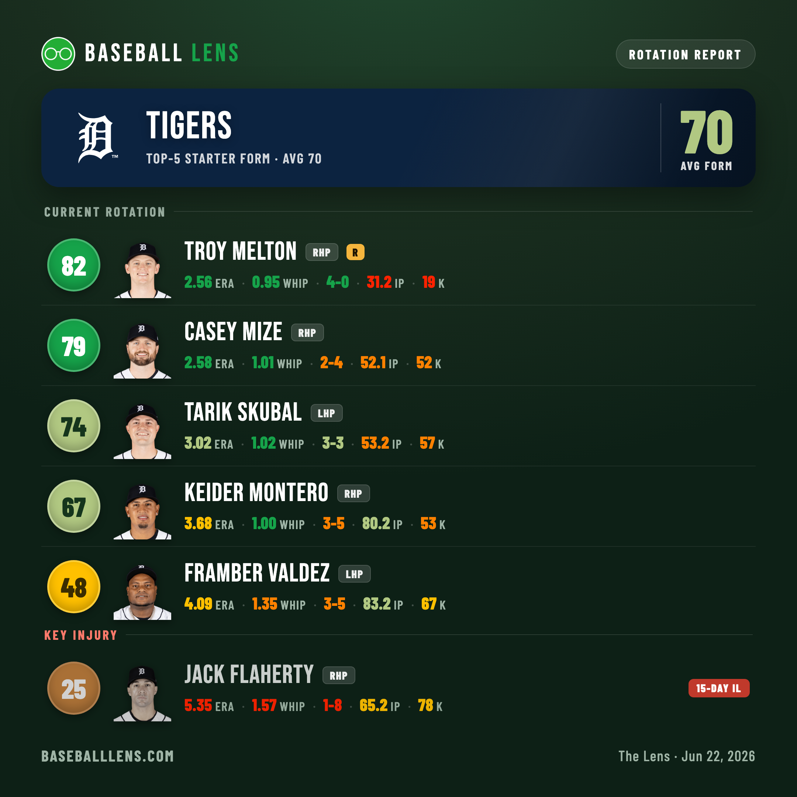
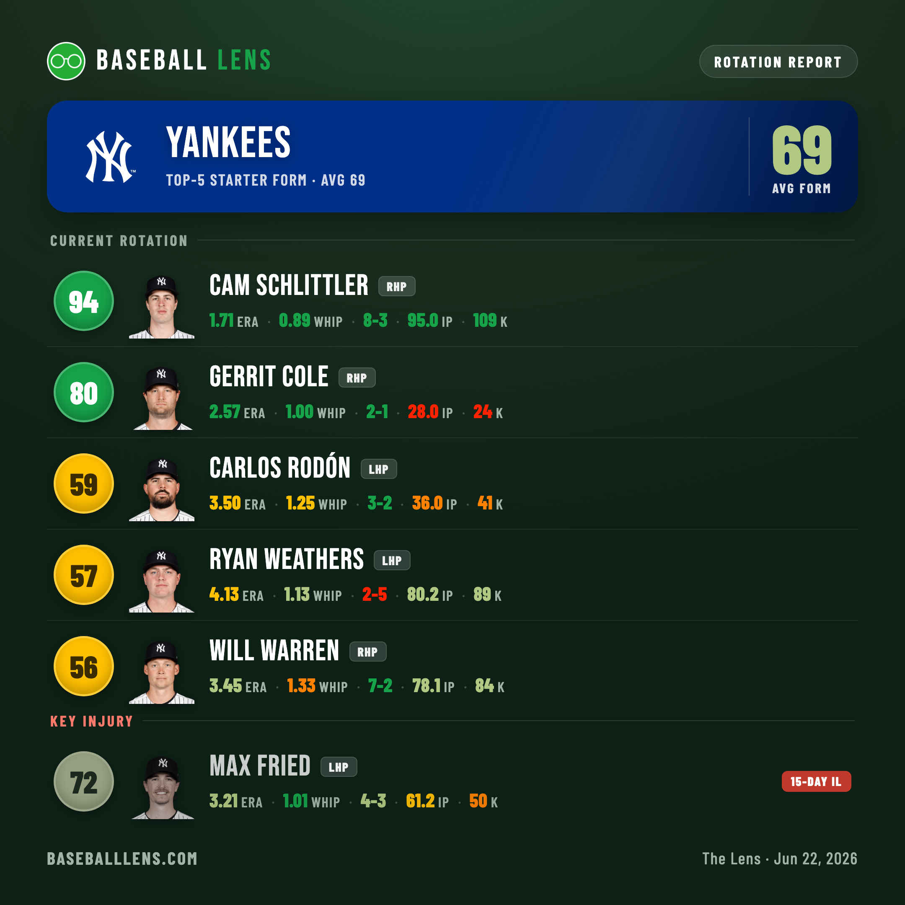
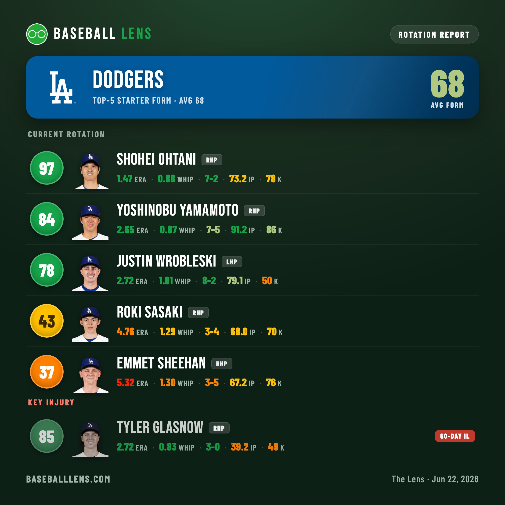
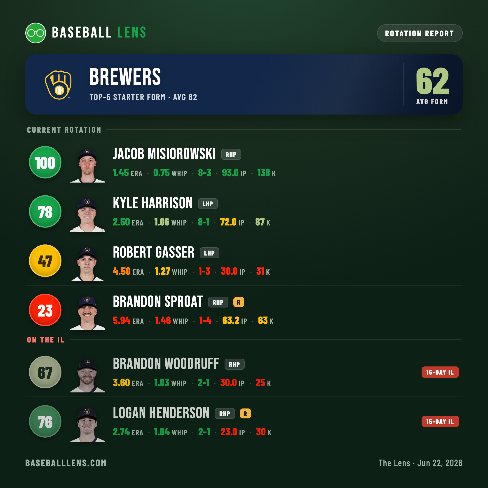
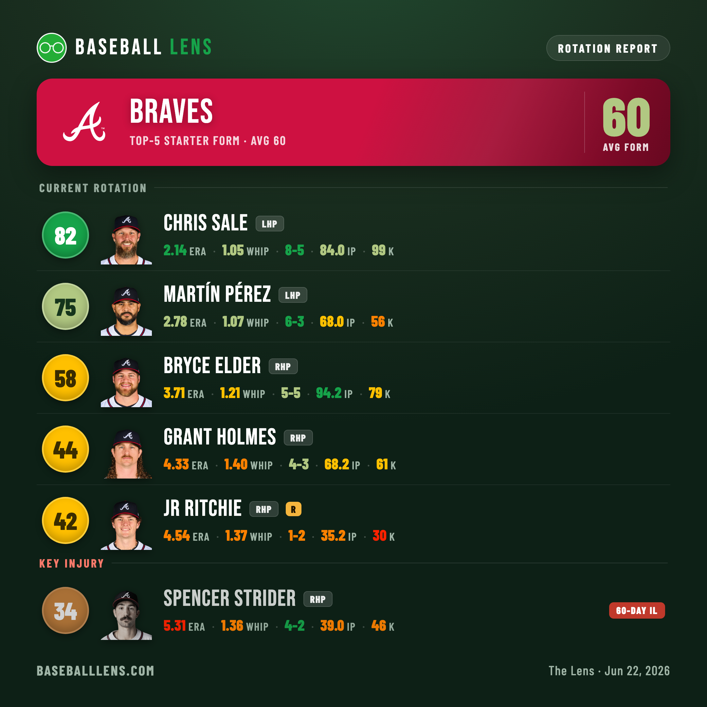

Five Rotations in Form, and the Arm Each One Is Missing
Our pitcher form score, applied to whole rotations — the five best right now, every starter graded, and who each one is doing it without.
Form here is our pitcher score: season ERA and WHIP folded into a single 0–100 number, then colored. Green is elite (75+), light‑green strong, yellow average, orange shaky, red rough. A rotation's grade is the average of its five most-used healthy starters. Rank them that way and you get five clear staffs — and a theme: every one of them is missing somebody.
1.Detroit Tigers
Average form 70 · 2 green, 2 light‑green, 1 yellow

Detroit tops the list less for a single ace than for not having a weak spot. Casey Mize (79, 2.58 ERA, 1.01 WHIP) and rookie Troy Melton (82, a 0.95 WHIP and a 4‑0 record across his first 31 innings) are both pitching like front-line arms. Tarik Skubal (74), back and rounding into shape, gives them a third at a 3.02 ERA, and Keider Montero (67) quietly carries a 1.00 WHIP over 80 innings.
Even the “down” man, Framber Valdez (48, 4.09 ERA), is the kind of veteran most teams would happily slot third. The twist is who's hurt: the Tiger on the 15‑day IL is Jack Flaherty (25, 5.35 ERA, 1.57 WHIP), comfortably the worst starter they'd run out there. Losing your fifth-best arm when he's pitching like one is the definition of depth — Melton stepping in actually raised the floor.
2.New York Yankees
Average form 69 · 2 green, 3 yellow

The Yankees' grade is a two-man tower with steady role players underneath. Cam Schlittler has been the story of the staff — a 94 built on a 1.71 ERA, a 0.89 WHIP and 109 strikeouts, ace production out of nowhere. Gerrit Cole (80) is back from injury and sharp across his first 28 innings, even if the workload is still being managed.
Behind them, Carlos Rodón (59), Ryan Weathers (57) and Will Warren (56, 7‑2) form a competent yellow tier — none of them scary, none of them a problem. What keeps this from being a top-two rotation outright is Max Fried (72, 3.21 ERA, 1.01 WHIP) on the 15‑day IL. He's their second-best healthy arm when right; his return pushes a yellow starter to the back and turns a good rotation into a deep one.
3.Los Angeles Dodgers
Average form 68 · 3 green, 1 yellow, 1 orange

No rotation is more top-heavy. Shohei Ohtani (97, 1.47 ERA, 0.88 WHIP) and Yoshinobu Yamamoto (84, 2.65 ERA, 0.87 WHIP) are a two-headed monster, and Justin Wrobleski (78, 8‑2) has been a genuine third. Then it falls off a cliff: Roki Sasaki (43) and Emmet Sheehan (37) are both sitting near a 5.00 ERA, dragging a would-be elite group down to merely very good.
And they're doing it without Tyler Glasnow (85, 2.72 ERA, 0.83 WHIP), parked on the 60‑day IL. He's pitching like an ace across his 40 innings; healthy, he replaces Sheehan and this becomes the scariest rotation in the league. The Dodgers' ceiling here is a health question, not a talent one.
4.Milwaukee Brewers
Average form 62 · 2 green, 1 yellow, 1 red (only four healthy starters)

Milwaukee is the most extreme shape on the board: two greens and not much behind them. Jacob Misiorowski is a perfect 100 — a 1.45 ERA, a 0.75 WHIP and 138 strikeouts that genuinely don't look real — and Kyle Harrison (78, 8‑1) is a star in his own right. After that it thins out fast: Robert Gasser (47) is fringe-average and Brandon Sproat (23, 5.94 ERA) is the only red starter in any of these five rotations.
The reason it's only four healthy arms: Brandon Woodruff (67) and Logan Henderson (76) are both on the 15‑day IL — two quality starters who would each bump Sproat out of the picture. The gap between Milwaukee's top two and their back end is the widest of anyone here, and it's almost entirely an injury story.
5.Atlanta Braves
Average form 60 · 1 green, 1 light‑green, 3 yellow

Atlanta sneaks into the five on the strength of its lefties. Chris Sale (82) is still Chris Sale — a 2.14 ERA and 99 punchouts — and Martín Pérez (75) has been quietly excellent at a 2.78 ERA. The rest is a steady yellow: Bryce Elder (58) leads the group in innings, Grant Holmes (44) holds his spot, and rookie JR Ritchie (42) is filling in.
That fill-in is necessary because Spencer Strider (34, 60‑day IL) still isn't himself — his rate stats sit in the orange as he works back from injury. When he rediscovers his old form, Atlanta has the upside to climb this list. For now they're a two-ace rotation holding the line, which was just enough to make the cut.
Five rotations, five different shapes — Detroit's depth, New York's top two, Los Angeles's ceiling, Milwaukee's cliff, Atlanta's lefties — and not one of them is currently at full strength. The order changes the day Glasnow, Fried, Strider or the Brewers' pair walk back through the door.
Form scores are season ERA and WHIP on the Baseball Lens 0–100 scale. Rotations are each team's five most-used healthy starters as of June 22, 2026; injured starters are shown for context. Stats via the MLB Stats API.